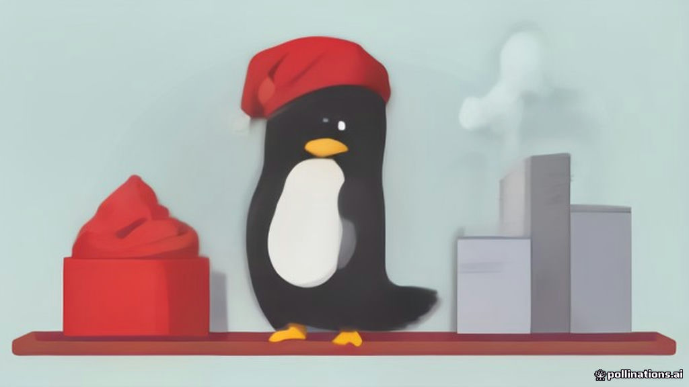

«Red Hat Enterprise Linux 10.3 под кодовым именем Coughlan»
Компания Red Hat выпустила обновление Red Hat Enterprise Linux 10.3 под кодовым названием Coughlan на базе ядра Linux 6.12 LTS. Предыдущий релиз RHEL 10 вышел в мае 2025 года, а версия 9 — ещё в мае 2022 года. Сборка RHEL 10.2 появилась в мае 2026 года. Минорные обновления теперь выходят чаще, чем успевают устареть кодовые названия. Системные администраторы готовятся к очередной пересборке серверов под новым coughlan-ом.
Источник: habr.com ↗